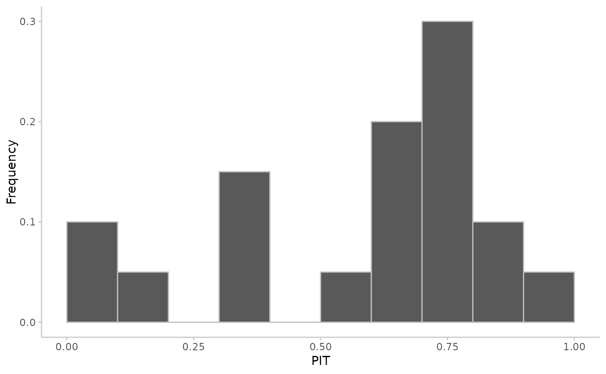
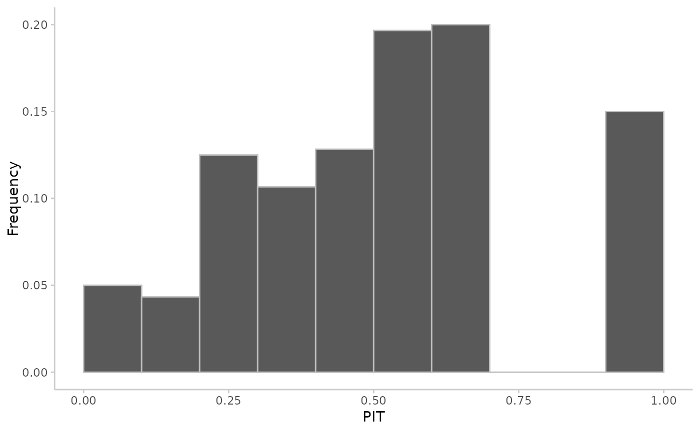

Uses a Probability integral transformation (PIT) (or a randomised PIT for integer forecasts) to assess the calibration of predictive Monte Carlo samples.
Arguments
- observed
A vector with observed values of size n
- predicted
nxN matrix of predictive samples, n (number of rows) being the number of data points and N (number of columns) the number of Monte Carlo samples. Alternatively,
predictedcan just be a vector of size n.- n_replicates
The number of draws for the randomised PIT for discrete predictions. Will be ignored if forecasts are continuous.
Value
A vector with PIT-values. For continuous forecasts, the vector will
correspond to the length of observed. For integer forecasts, a
randomised PIT will be returned of length
length(observed) * n_replicates.
Details
Calibration or reliability of forecasts is the ability of a model to correctly identify its own uncertainty in making predictions. In a model with perfect calibration, the observed data at each time point look as if they came from the predictive probability distribution at that time.
Equivalently, one can inspect the probability integral transform of the predictive distribution at time t,
$$ u_t = F_t (x_t) $$
where \(x_t\) is the observed data point at time \(t \textrm{ in } t_1, …, t_n\), n being the number of forecasts, and \(F_t\) is the (continuous) predictive cumulative probability distribution at time t. If the true probability distribution of outcomes at time t is \(G_t\) then the forecasts \(F_t\) are said to be ideal if \(F_t = G_t\) at all times t. In that case, the probabilities \(u_t\) are distributed uniformly.
In the case of discrete outcomes such as incidence counts, the PIT is no longer uniform even when forecasts are ideal. In that case a randomised PIT can be used instead: $$ u_t = P_t(k_t) + v * (P_t(k_t) - P_t(k_t - 1) ) $$
where \(k_t\) is the observed count, \(P_t(x)\) is the predictive cumulative probability of observing incidence k at time t, \(P_t (-1) = 0\) by definition and v is standard uniform and independent of k. If \(P_t\) is the true cumulative probability distribution, then \(u_t\) is standard uniform.
The function checks whether integer or continuous forecasts were provided. It then applies the (randomised) probability integral and tests the values \(u_t\) for uniformity using the Anderson-Darling test.
As a rule of thumb, there is no evidence to suggest a forecasting model is miscalibrated if the p-value found was greater than a threshold of p >= 0.1, some evidence that it was miscalibrated if 0.01 < p < 0.1, and good evidence that it was miscalibrated if p <= 0.01. However, the AD-p-values may be overly strict and there actual usefulness may be questionable. In this context it should be noted, though, that uniformity of the PIT is a necessary but not sufficient condition of calibration.
References
Sebastian Funk, Anton Camacho, Adam J. Kucharski, Rachel Lowe, Rosalind M. Eggo, W. John Edmunds (2019) Assessing the performance of real-time epidemic forecasts: A case study of Ebola in the Western Area region of Sierra Leone, 2014-15, doi:10.1371/journal.pcbi.1006785
Examples
# \dontshow{
data.table::setDTthreads(2) # restricts number of cores used on CRAN
# }
## continuous predictions
observed <- rnorm(20, mean = 1:20)
predicted <- replicate(100, rnorm(n = 20, mean = 1:20))
pit <- pit_sample(observed, predicted)
plot_pit(pit)

## integer predictions
observed <- rpois(20, lambda = 1:20)
predicted <- replicate(100, rpois(n = 20, lambda = 1:20))
pit <- pit_sample(observed, predicted, n_replicates = 30)
plot_pit(pit)
